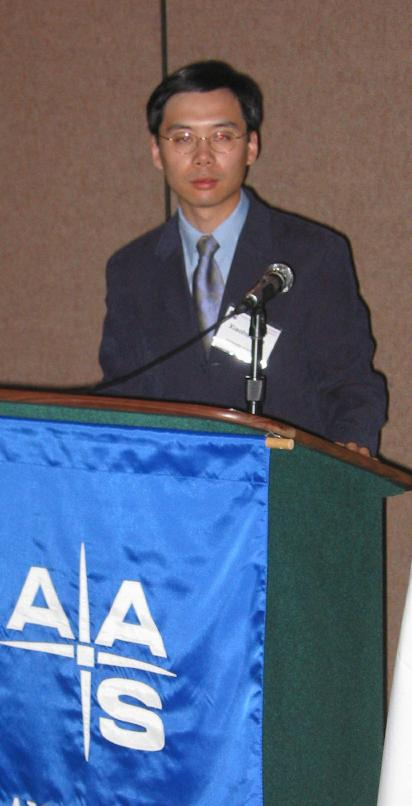

| Gary S. Ruderman | Dr. Richard Kron | Public Information Officer | Scientific Spokesman | Sloan Digital Sky Survey | Sloan Digital Sky Survey | Phone: (312) 320-4794 | (773)-702-3335 | sdsspio@aol.com | rich@oddjob.uchicago.edu |
SDSS Astronomer Xiaohui Fan is 2003 Newton Lacy Pierce Prize winnerContact Information: Xiaohui Fan, fan@as.arizona.edu, 520-626-7558Xiaohui Fan, assistant professor of astronomy at the University of Arizona, has won the American Astronomical Society's 2003 Newton Lacy Pierce Prize for "his systematic discovery of high redshift quasars in the Sloan Digital Sky Survey.""The quasars are the best probe to date of the epoch of the formation of the first objects in the universe; their discovery enabled identification of the end of the epoch of re-ionization," according to the American Astronomical Society (AAS) citation. Fan headed the Sloan Digital Sky Survey (SDSS) team that announced the discovery of three of the four oldest known quasars January 9 at the AAS winter meeting in Seattle. It took roughly 13 billion years for light to reach us from the highest redshift quasar discovered. The Pierce Prize is an early career award given annually for outstanding achievement over the past five years in observational astronomical research based on measurements of radiation from an astronomical object. It is given to an astronomer who is younger than 36 years old in the year designated for the award. Fan will receive the award and make his Newton Lacy Pierce lecture at an AAS meeting in the next year. "Of course I was very happy that I have won the prize," Fan said. "I believe that it is more than an honor and recognition of the work of mine and my collaborators. It is also an honor and recognition for the SDSS from the community, in particular the excellent science, and the role the SDSS has played in training and promoting young scientists," added the University of Arizona Steward Observatory astronomer. Fan has a history of quasar discovery. As a graduate student in 2000, he was part of the SDSS team that discovered a quasar with a red shift of 5.8. In 2001, he was part of the collaboration discovering a 6.28 redshift quasar. And late in 2002, the team found three more quasars with redshifts of 6.4, 6.2 and 6.1. During the past five years, Fan and other members of the SDSS observed more than 30,000 quasars, or a third of the total 100,000 quasars they intend to survey. Fan joined the University of Arizona faculty in 2002 after earning his doctorate in astrophysical sciences from Princeton University. He earned his 1995 master's degree at Beijing Astronomical Observatory, Chinese Academy of Sciences, China, and his Bachelor of Science degree from Nanjing University, China, in 1992. Other SDSS members who have received the Pierce Prize include: Bruce Margon (1981), Richard Kron (1985) and Michael Strauss (1996). |
 |